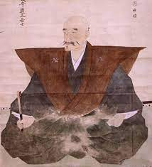

斎藤道三
1994年?〜1556年
斎藤道三は貧しい浪人の家に生まれ、僧侶、商人、武士と身分を変え、その時々に家と名を変えながら、ついには美濃一国を治める戦国大名にまで昇りつめました。斎藤道三の徹底した現実主義と自らの夢を追いかける姿は、非道と言われつつも、ロマンを駆り立てられる生き様。 しかし、遂には自らの息子に命を絶たれ、まさに因果応報とも言える最期を遂げているのです。幼少期に出家し、年を経て再び出家した斎藤道三には諸行無常の言葉がふさわしいと言えるでしょう。
1994年?〜1556年
斎藤道三は貧しい浪人の家に生まれ、僧侶、商人、武士と身分を変え、その時々に家と名を変えながら、ついには美濃一国を治める戦国大名にまで昇りつめました。斎藤道三の徹底した現実主義と自らの夢を追いかける姿は、非道と言われつつも、ロマンを駆り立てられる生き様。 しかし、遂には自らの息子に命を絶たれ、まさに因果応報とも言える最期を遂げているのです。幼少期に出家し、年を経て再び出家した斎藤道三には諸行無常の言葉がふさわしいと言えるでしょう。